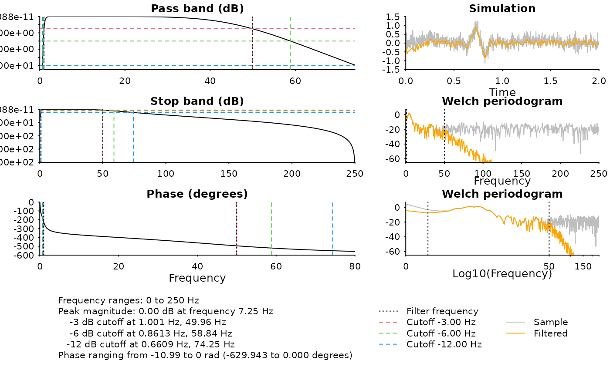
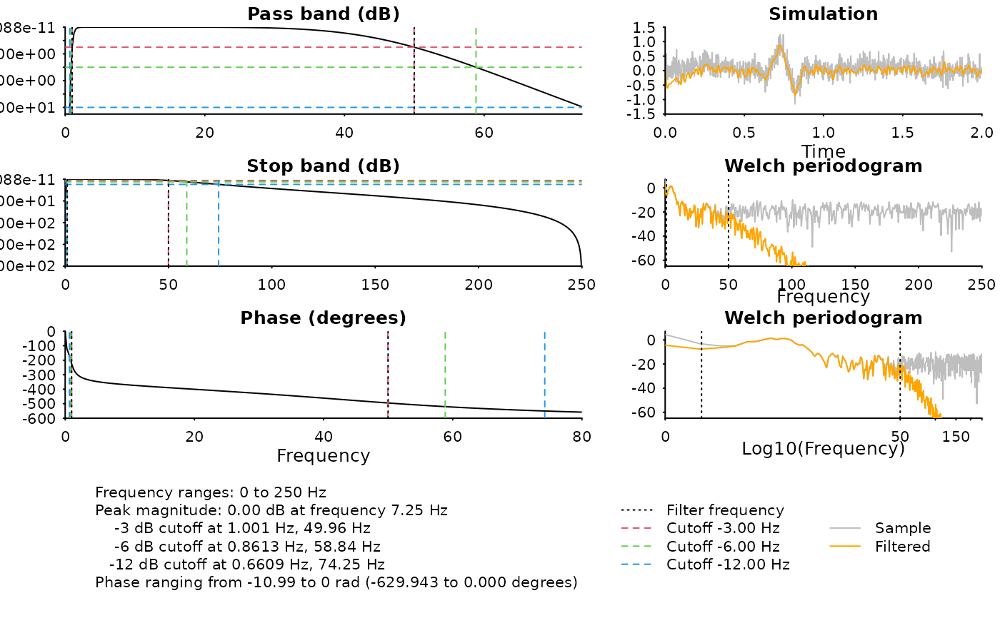

Generate frequency response plot with sample-data simulation
Arguments
- b
the moving-average coefficients of an
ARMAmodel- a
the auto-regressive coefficients of an
ARMAfilter; default is1- fs
sampling frequency in
Hz- n
number of points at which to evaluate the frequency response; default is
512- whole
whether to evaluate beyond
Nyquistfrequency; default is false- sample
sample signal of length
nfor simulation- vlines
additional vertical lines (frequencies) to plot
- xlim
frequency limit of frequency response plot; default is
"auto", can be"full"or a numeric of length 2- cutoffs
cutoff decibel powers to draw on the frequency plot, also used to calculate the frequency limit when
xlimis"auto"
Examples
library(ravetools)
# sample rate
srate <- 500
# signal length
npts <- 1000
# band-pass
bpass <- c(1, 50)
# Nyquist
fn <- srate / 2
w <- bpass / fn
# ---- FIR filter ------------------------------------------------
order <- 160
# FIR1 is MA filter, a = 1
filter <- fir1(order, w, "pass")
diagnose_filter(
b = filter$b, a = filter$a, n = npts,
fs = srate, vlines = bpass
)
 # ---- Butter filter --------------------------------------------
filter <- butter(3, w, "pass")
diagnose_filter(
b = filter$b, a = filter$a, n = npts,
fs = srate, vlines = bpass
)

# ---- Butter filter --------------------------------------------
filter <- butter(3, w, "pass")
diagnose_filter(
b = filter$b, a = filter$a, n = npts,
fs = srate, vlines = bpass
)
